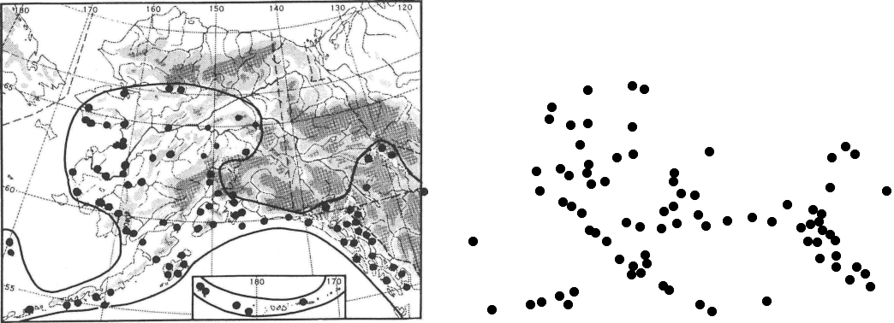
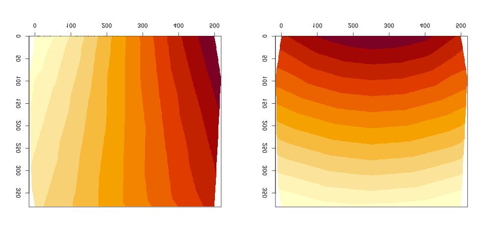
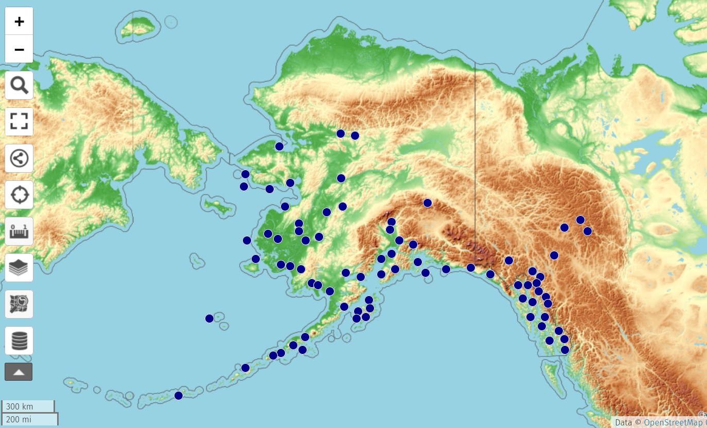

Blog 10: Digitizing specimen maps
Posted by Cam on 2021-04-01
The New Flora of Alaska project is partly an update of Eric Hultén’s 1968 Flora of Alaska. Much of Hultén’s book is still valuable and we’d like to incorporate the book’s content into our new digital presentation. At the beginning of the project we were given permission from Stanford University Press to digitize Hultén’s book and mash it up, as long as we do not share the full-page images. In other posts I hope to relate how I have been able to break down each page into maps, illustrations and text, but first I’d like to share how I have converted the specimen ‘dot-map’ for each taxon into a list of longitudes and latitudes. This feels like quite a triumph and I’ll share the method here in case others might be trying to do something similar.
Step 1: Image to points
As an example, here on the left is the specimen map for Dryopteris dilatata subsp. americana (Fisch.) Hult., from page 55:

The software tool I’ve been using for digitizing is the amazing and comprehensive ImageMagick. I looked at various ways to use the -morphology tool in convert to recognize the dots on the map, but was unsuccessful, so I converted the dark pixels on the map to plain data, for subsequent external processing:
convert map.tiff -resize 500x500 -threshold 35% txt: | grep 000000 | sed 's/:.*$//g' > mapI then wrote a simple program that:
- For each pixel, sums all the pixels within a box of 7×7 pixels around the focal pixel,
- Discards all pixels with summed values less than 44. This successfully isolates the dark, circular points on the map. However several adjacent pixels will all be indicating the same point. So…
- Spread outward from active pixels, into other active pixels but not into the inactive pixels, marking each cluster of pixels with a different value.
- Return just one pixel from each cluster.
Converting these x,y values back into an image (again with ImageMagick), the map now looks like the above image on the right. You can see that the capture is almost perfect, except for a missing point on the far left, which was a smaller than the standard dot (Hultén or his assistant drew on the points by hand).
Step 2: image x & y into longitude & latitude
This step turned out to be harder than the first to crack. The general problem is warping one coordinate system into another, via control points. I was able to get 36 points from the Hultén map for which I could read or estimate the longitude and latitude, giving four values for each: imgx, imgy, longitude and latitude. I first looked into various GIS orthorectification tools (e.g., gdalwarp), but no easy solution leapt out.
I then realized that two polynomial regressions of the form (in R notation) longitude ~ poly(imgx, n) + ploy(imgy) might work. However, the accuracy of squares, cubes and quadratics was too low, and for higher degrees, while the accuracy of the control point mappings was good, the interpolated values were way off.
What I really needed was a model-free way to interpolate values between control points. I finally discovered the interp package, which does just that. It creates a landscape of interpolated values between control points (L: longitude, R: latitude):

The final accuracy of the conversion from map location to longitude-latitude data is about 1-2 degrees, and depends particularly on accuracy of image cropping of each map (done in a prior, not yet documented step). This level of accuracy is obviously too low for many uses, but it does give a good Alaska-wide sense of the plant’s distribution.
Here’s the R script that interpolates and outputs a pixel mapping:
a <- read.table("controlpoints",header=T,sep="|")
library(interp)
lon.i <- interp(a$imgx, a$imgy, a$lon, nx=500,ny=500)
## image(lon.i)
lat.i <- interp(a$imgx, a$imgy, a$lat, nx=500,ny=500)
## image(lat.i)
lon.t <- as.table(lon.i$z)
colnames(lon.t) <- seq(0,499)
rownames(lon.t) <- seq(0,499)
lat.t <- as.table(lat.i$z)
out <- data.frame(as.data.frame(lon.t),as.data.frame(lat.t)$Freq)
## colnames(out) <- c("x","y","lon","lat")
write.table(out, file="predict", quote = F, sep=",",
na = "", col.names = F, row.names=F)
The conversion program then reads this imgx,imgy-to-lon,lat mapping and outputs the longitudes and latitudes of the points. (There is an additional step of identifying if the imgx,imgy is in the inset box for the western Aleutian islands, which are converted in a different way.) These decimal degree coordinates can then be mapped and mashed up in any way needed. Here are the points displayed on Open Street Map, via the super uMap tool:

Putting all these parts together in a Bash script, I can thus convert all the 1,735 dot maps in Hultén into lists of specimen coordinates. We will then map these, along with Arctos, GBIF and iNat occurrences, in the upcoming API and web view of the new flora.